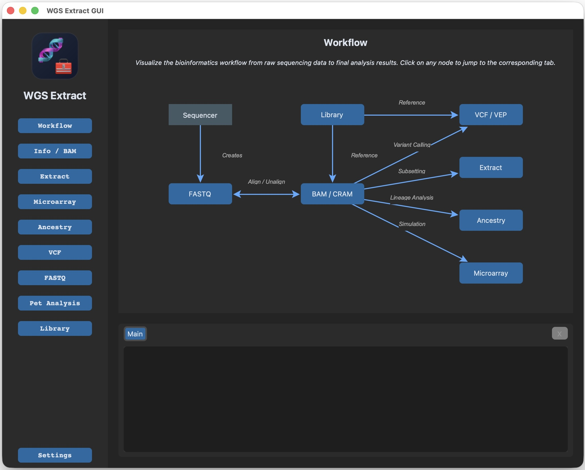

Inspect
Understand your genome files
Identify BAM/CRAM build, sort/index state, coverage, read length, insert size, and basic integrity before you spend hours on a full workflow.
BAMCRAMcoverageLocal-first genomics toolkit
WGS Extract CLI is a modern, scriptable command-line recreation of WGS Extract with a desktop GUI for guided workflows. It wraps common bioinformatics tools so you can inspect BAM/CRAM files, build consumer microarray files, call variants, extract Y/MT reads, manage references, and automate repeatable genome work.
WGS Extract sits between raw genome files and the websites, reports, and downstream tools people actually want to use.
Identify BAM/CRAM build, sort/index state, coverage, read length, insert size, and basic integrity before you spend hours on a full workflow.
BAMCRAMcoverageCreate smaller Y-DNA, mitochondrial, unmapped, random-subset, or custom-region files for specialized services and faster experiments.
chrYchrMregionsSort, index, convert BAM to CRAM, convert CRAM back to BAM, repair known FTDNA file quirks, and keep downstream tools happy.
sortindexCRAMGenerate SNP, InDel, structural variant, CNV, FreeBayes, GATK, DeepVariant, and VEP outputs when you need a VCF-centered workflow.
VCFVEPDeepVariantSimulate consumer microarray raw files for 23andMe, AncestryDNA, FamilyTreeDNA, MyHeritage, GEDmatch-style combined kits, and research panels.
23andMeAncestryDNAGEDmatchRun FASTQ QC, trim reads, align to a reference, manage reference libraries, test with fake data, and even experiment with dog and cat genomes.
FASTQreferencepet DNAThe project uses Pixi to manage Python plus bioinformatics tools like samtools, bcftools, bwa, minimap2, fastqc, fastp, and related dependencies.
Use the official installer for macOS, Linux, WSL2, or PowerShell on Windows. Restart your terminal after installing.
Clone this repository, enter the folder, and run pixi install. Pixi builds the local app environment for repeatable CLI and GUI runs.
Bootstrap the reference library, list available genomes, then install the reference build you plan to use, such as hs38.
Run info, try a tiny region like chrM, and only then move to full-genome jobs that can take hours and lots of disk.
# 1. Install Pixi
curl -fsSL https://pixi.sh/install.sh | bash
# 2. Clone WGS Extract CLI
git clone https://github.com/theontho/wgsextract-cli.git
cd wgsextract-cli
# 3. Install the reproducible environment
pixi install
# 4. Initialize the reference library
pixi run wgsextract ref bootstrap
pixi run wgsextract ref library --list
pixi run wgsextract ref library --install hs38
# 5. Verify the CLI and tools
pixi run wgsextract info --detailedSupported on Intel and Apple Silicon. Pixi installs the standard command-line tools used by the app.
The most straightforward path for full bioinformatics support. WSL2 is the recommended Windows route.
Supported for some workflows with an MSYS2 UCRT64 toolchain and the pacman runtime. See Windows pacman runtime docs.

CLI plus GUI
Use the CLI when you want repeatable commands, automation, logging, or AI-agent friendly workflows. Use the desktop GUI when you want a guided, tabbed interface for common tasks like input selection, references, extraction, microarray generation, and VCF work.
Great for repeatable workflows, batch runs, remote machines, long jobs, and precise control over inputs, outputs, references, memory, threads, and regions.
pixi run wgsextract --input sample.cram --outdir out/sample info
pixi run wgsextract microarray --formats 23andme_v5,ancestry_v2
pixi run wgsextract vcf filter --expr 'QUAL>30'The CustomTkinter desktop GUI exposes workflows for file info, BAM/CRAM management, extraction, microarrays, ancestry, VCF work, FASTQ, pet analysis, references, and settings.
pixi run wgsextract gui --desktopThe NiceGUI web interface also exists for experimentation: pixi run wgsextract gui --web.
WGS files can feel chaotic until you know the pipeline. Most work moves through these file types.
Whole genome sequencing guide
Whole genome sequencing reads across nearly all of your DNA instead of checking a small set of predefined positions. That makes it flexible: you can revisit the same data years later as tools, reference genomes, and research improve.
Attempts to sequence the entire genome: autosomes, sex chromosomes, mitochondrial DNA, coding regions, non-coding regions, and many structural signals.
Checks selected markers. It is cheaper and common in consumer ancestry, but it misses most variants that are not on the chip.
Targets protein-coding regions. Useful for many clinical questions, but it skips most non-coding and structural context.
| Goal | Typical output | WGS Extract helps with |
|---|---|---|
| Ancestry and genealogy | Microarray-like raw files, Y/MT extracts, haplogroups | CombinedKit, 23andMe/Ancestry-style formats, chrY/chrM VCFs |
| Variant discovery | SNP/InDel/SV/CNV VCF files | bcftools, FreeBayes, GATK, DeepVariant, Delly, pbsv/sniffles workflows |
| File cleanup and storage | Sorted/indexed BAM, compressed CRAM | Sort, index, BAM/CRAM conversion, FTDNA repair helpers |
| Focused research | Region-specific BAM/VCF files | Custom region extraction, gene/region filtering, gap-aware filters |
Coverage is how many reads support each position. Around 30x is common for short-read human WGS, but coverage varies by region, technology, lab, and alignment quality.
Coordinates depend on the reference genome. hg19/GRCh37, hg38/GRCh38, and T2T are not interchangeable without liftover or re-analysis.
Short reads are common and cost-effective. Long reads such as PacBio HiFi can resolve many structural variants and repetitive regions better.
A quick tour of the major command groups. Run pixi run wgsextract help or pixi run wgsextract --full-help for the live command tree.
ref bootstrap, ref library, ref download, ref index, ref verify, deps check, config
bam sort, bam index, bam to-cram, bam to-bam, bam unalign, bam identify, repair
extract mito-fasta, extract mito-vcf, extract ydna-bam, extract ydna-vcf, extract y-mt-extract, extract custom
vcf snp, vcf indel, vcf sv, vcf cnv, vcf freebayes, vcf gatk, vcf deepvariant, vcf filter
microarray, lineage y-haplogroup, lineage mt-haplogroup, vep run, analyze comprehensive
align, qc fastqc, qc fastp, qc fake-data, pet-align, benchmark
# Inspect a genome alignment
pixi run wgsextract --input sample.cram info --detailed
# Generate a consumer microarray-style file
pixi run wgsextract --input sample.bam microarray --formats 23andme_v5
# Extract mitochondrial variants quickly
pixi run wgsextract --input sample.bam extract mito-vcf --region chrM
# Filter a VCF to high-confidence variants
pixi run wgsextract vcf filter --vcf-input calls.vcf.gz --expr 'QUAL>30'
# Launch the desktop GUI
pixi run wgsextract gui --desktop